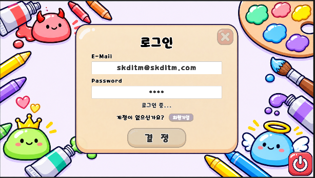
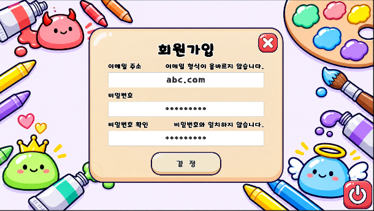
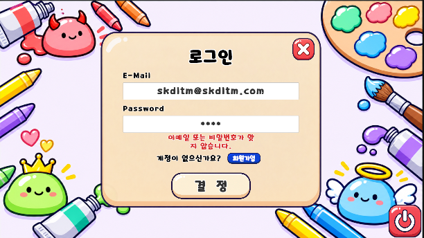
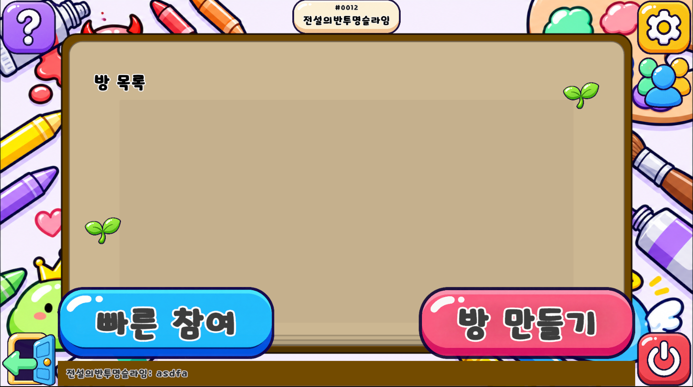
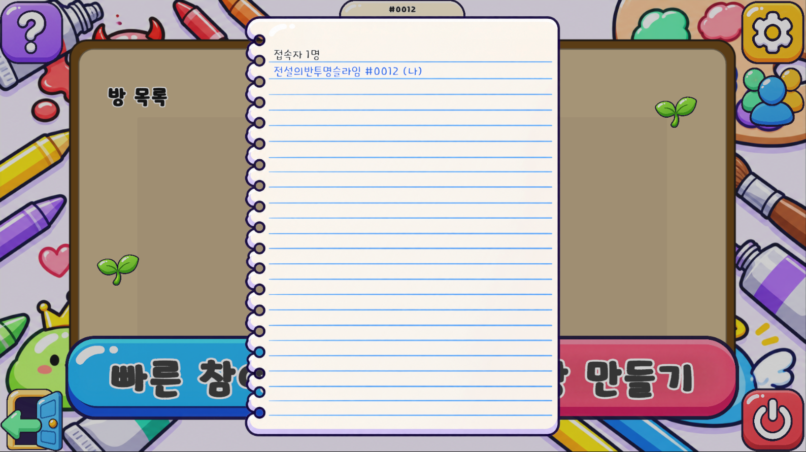
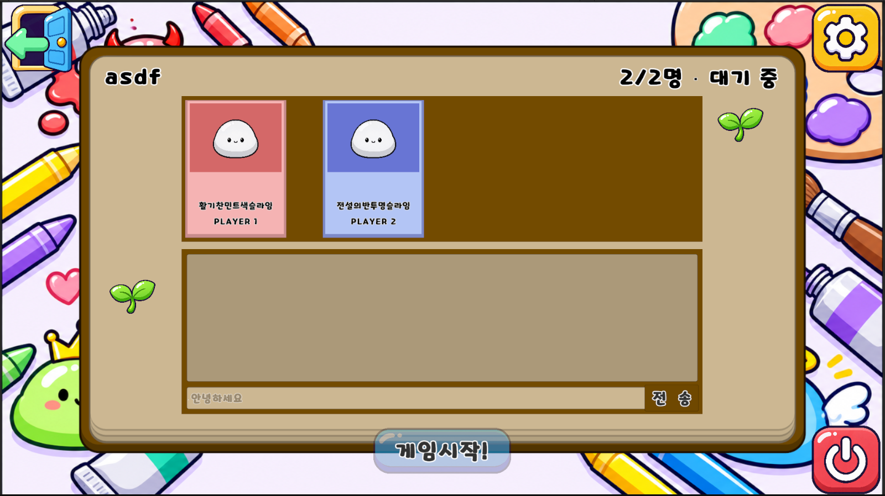
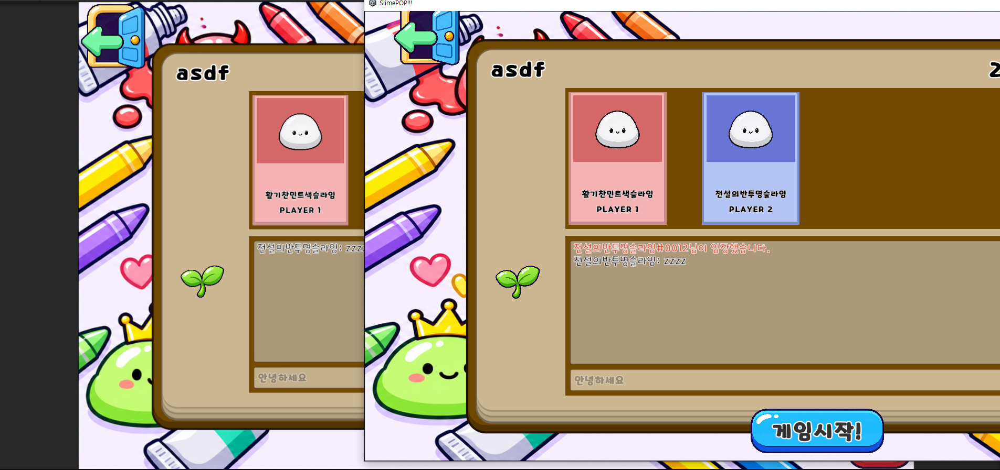

이 문서는 지금 빌드의 규칙만 적습니다. 구현 방식은 별도의 개발 문서에 있습니다.
같은 판, 같은 목표 합으로 최대 4명이 180초 동안 점수를 겨루는 슬라임 숫자 퍼즐 대전 게임. 숫자가 적힌 슬라임 170마리가 깔린 판에서 마우스로 사각형을 끌어, 안의 숫자 합이 목표 합과 같으면 슬라임이 터지고 점수를 얻습니다.
| 핵심 재미 | 빠르게 합을 찾는 손맛 + 특수 슬라임(천사·킹·악마)을 노리는 판단 + 다른 참가자와의 실시간 순위 경쟁 |
| 대전 방식 | 각자 자기 판을 푸는 점수 경쟁. 다른 사람의 판을 방해하는 요소는 없음 |
| 공정성 | 모든 참가자가 같은 시드로 만든 완전히 같은 판, 같은 목표 합, 같은 아이템으로 시작 |
| 상대 | 온라인 플레이어 또는 AI. 방장이 빈 자리에 AI를 넣고 자리마다 난이도를 고름 |
| 아트 방향 | 크레용·물감·공책을 쓴 손그림 낙서풍. 동그란 슬라임 캐릭터 |
| 소셜 | 이메일 계정, 로비 접속자 목록, 로비·대기실 채팅 |
| 판 | 17 × 10 = 170칸. 슬라임마다 숫자 1 ~ 9 (같은 확률) |
| 조작 | 마우스로 사각형을 끌어 놓음. 안의 숫자 합이 목표 합과 같으면 터짐. 끄는 동안 범위가 초록(맞음)·빨강(틀림)으로 보임 |
| 목표 합 | 판마다 10 ~ 15 중 하나. 판 시작 전 뽑기 화면에서 공개되고 한 판 동안 고정 |
| 시간 | 180초. 일시정지 없음, 조기 종료 없음 — 판이 막혀도 시간은 끝까지 흐름 |
| 막혔을 때 | "더 이상 만들 수 있는 수가 없습니다!" 안내. 남은 아이템으로 살릴 수 있음 |
| 특수 슬라임 | 판마다 킹 2 · 천사 3 · 악마 5마리, 나머지 160마리는 기본. 위치와 숫자는 시드로 정해짐 |
점수는 마이너스가 될 수 있습니다(악마). 순위는 점수로 정하고, 영구 전적·최고 기록은 두지 않습니다 — 그 판의 기록은 대기실로 돌아가면 지웁니다.
| 종류 | 기본점수 | 특수점수 | 생기는 곳 |
|---|---|---|---|
| 기본 | 1 | 없음 | 판 생성 |
| 악마 | 1 | B × (−1) | 판 생성 (5마리) |
| 천사 | 2 | B × 2 | 판 생성 (3마리) |
| 킹 | 1 | +10 | 판 생성 (2마리) |
| 조커 | 3 | +(목표 합 × 2) | 조커 아이템 |
| 합체 | 합쳐진 기본점수 합 | 없음 | 합체 아이템 (2 × 2칸 차지) |
| 예 (목표 합 10) | B | 계산 | 점수 |
|---|---|---|---|
| 기본 + 기본 | 2 | 2 | 2 |
| 기본 + 악마 | 2 | 2 − 2 | 0 |
| 기본 + 천사 | 3 | 3 + 6 | 9 |
| 천사 + 킹 | 3 | 3 + 6 + 10 | 19 |
| 천사 + 천사 | 4 | 4 + 8 + 8 | 20 |
| 기본 + 조커 | 4 | 4 + 20 | 24 |
| 천사 + 조커 | 5 | 5 + 10 + 20 | 35 |
| 악마 + 악마 | 2 | 2 − 2 − 2 | −2 |
악마는 같이 터뜨린 슬라임의 점수를 깎는 함정, 천사·킹은 노릴 만한 보너스입니다. 그래서 "어디를 먼저 지울까"가 단순 속도 경쟁 위에 판단을 더합니다.
| 아이템 | 횟수 | 효과 |
|---|---|---|
| 돋보기 | 1 | 누르는 즉시 가능한 조합 하나를 표시. 최고의 수가 아니라 악마가 없는 조합 중 무작위 — 일찍 써서 킹 조합을 찾는 식의 이득을 막음 |
| 파괴 | 2 | 슬라임 1마리 제거, 그 슬라임의 기본점수만 얻음 |
| 변신 | 1 | 5 × 5 범위의 슬라임마다 50% 확률로 +1 또는 −1 (9 → 1, 1 → 9로 순환). 막혔을 때 판을 살리는 용도 |
| 합체 | 1 | 2 × 2 범위(2마리 이상)를 큰 슬라임 하나로. 숫자 = 합의 일의 자리. 0이면 바로 터지고 합쳐진 수 × 4점. 범위에 조커가 있으면 불가 |
| 조커 | 1 | 누르는 즉시 무작위 기본 슬라임 하나가 조커가 됨(자리 선택 불가). 5초마다 빈자리로 이동하며 남은 시간을 표시. 원하는 곳에 넣고 바로 터뜨리는 쉬운 고득점을 막으려고 자리를 고를 수 없게 함 |
| 숫자변경 | 3 | 슬라임 1마리의 숫자를 원래 숫자를 뺀 1 ~ 9 중 무작위로 |
| 상황 | 처리 |
|---|---|
| 대기실에서 나감 | 자리를 비움. 방장이면 남은 사람에게 방장을 넘기고, 사람이 아무도 안 남으면 방을 지움 |
| 대전 중 나감 | 기권(최하위). 결과 화면에 이름이 보이도록 자리는 남겨 두고, 대기실로 돌아갈 때 비움 |
| 연결 끊김 | 5초마다 접속 신호를 보내고, 15초 동안 없으면 끊긴 것으로 봄. 대기 중이면 자리를 비우고, 대전 중이면 기권 |
| 방장 끊김 | 남은 사람 중 자리 번호가 가장 앞인 사람이 방장을 맡음 |
| 난이도 | 반응 시간 (목표 합 10) | 정확도 | 성격 |
|---|---|---|---|
| 쉬움 | 4.8 ~ 9.6초 | 0% | 보이는 대로 아무 수. 막히면 아무 아이템이나 아무 데나 |
| 보통 | 3.6 ~ 7.2초 | 33% | 가끔 좋은 수 |
| 어려움 | 2.8 ~ 5.6초 | 67% | "진땀승"을 목표로 |
| 지옥 | 2.4 ~ 4.8초 | 100% | 사람이 이기기 어렵게. 목표 합과 상관없이 늘 같은 속도 |
목표 합이 클수록 사람이 조합을 찾는 데 오래 걸리므로, 쉬움 · 보통 · 어려움은 반응 시간을 늘림.
| 목표 합 | 10 | 11 | 12 | 13 | 14 | 15 |
|---|---|---|---|---|---|---|
| 배율 | ×1 | ×1.2 | ×1.35 | ×1.5 | ×1.65 | ×1.65 |
대기실에서 T를 누르면 내 자리도 AI가 대신 둡니다(1 쉬움 · 2 보통 · 3 어려움 · 4 지옥, 다시 T로 끔). 사각형을 끌어 놓는 모습과 아이템 범위를 화면에 보여 준 뒤 적용하므로 시연에서 사람처럼 보입니다.
| 씬 | 구성 |
|---|---|
| 로그인 | SLIMEPOP!!! 글자 등장 연출 → Touch To Start → 서버 연결 확인 → 이메일 로그인. 회원가입은 이메일·비밀번호 확인 뒤 닉네임 생성 창에서 가입 |
| 로비 | 내 닉네임과 #번호, 방 목록, 빠른 참여, 방 만들기, 접속자 목록(공책 팝업), 접힌 로비 채팅(최근 한 줄 + 안 읽은 수), 도움말·옵션·로그아웃·종료 |
| 룸 | 방 제목·인원·상태, 참가자 카드(슬라임·이름·PLAYER n, 자리 색), 방장의 AI 토글·난이도 선택, 방 채팅, 게임 시작(방장), 나가기 |
| 게임 | 뽑기 화면(목표 합 · 아이템) → 3, 2, 1 → 판 · 남은 시간 · 아이템 칸 · 실시간 순위(참가자 슬라임이 등수 자리로 통통 튀며 이동) → TIME UP! → 결과 화면 |







| 항목 | 내용 |
|---|---|
| 슬라임 색 | 파스텔 10색 팔레트에서 고름. 내 판의 기본 슬라임과 룸 카드·순위·결과 판에 내 색으로 보임. 특수 슬라임은 고정 외형 |
| 맵 테마 | 8종 — 기본(새싹), 봄, 여름, 가을, 겨울, 맑음, 밤, 흐림. 내 화면에만 적용 |
| 소리 | BGM · 효과음 볼륨 따로. 값은 저장되어 다음 실행에도 유지 |
| 때 | 연출 |
|---|---|
| 판 시작 전 | 목표 합 숫자가 10 ~ 15 사이로 빠르게 돌다 점점 느려져 멈춤 → 빨간 네모가 아이템 6개 위를 옮겨 다니다 하나에 멈춤 → 목표 합 슬라임이 시간 글자 위로 날아감 |
| 터짐 | 슬라임이 부풀었다 쏙 사라짐(마리마다 0.035초 시간차) |
| +점수 | 판 위에 "+12"가 톡 커지며 떠오름. 15점 이상은 금색으로 크게, 0점은 회색, 손해는 빨강 |
| 합이 틀림 | 빨간 드래그 상자가 좌우로 흔들린 뒤 사라짐 |
| 순위 변동 | 참가자 슬라임이 바뀐 등수 자리로 통통 튀며 이동 |
| 마지막 10초 | 시간 글자가 빨갛게, 5초부터 째깍 소리 |
| 시간 끝 | TIME UP! — 1.2초 동안 마지막 판을 보여 준 뒤 결과 화면 |
| 화면 전환 | 패널이 살짝 커지며 나타나고, 반대로 사라짐 |
AI 난이도는 "사람이 실제로 몇 마리를 지우는가"를 기준으로 맞췄습니다. 점수는 특수 슬라임 운에 따라 흔들리므로 비교는 슬라임 제거 수로 했습니다.
| 목표 합 | 평균 제거 | 범위 | 평균 간격 | 판당 실수 | 관찰 |
|---|---|---|---|---|---|
| 10 | 107.9 | 87 ~ 134 | 3.3초 | 1.7 | 후반 60초엔 판이 먼저 바닥남 (사람이 아니라 판의 한계) |
| 11 | 87.8 | 60 ~ 104 | 4.8초 | 2.4 | 고르게 지우지만 시간이 모자람 |
| 12 | 84.5 | 54 ~ 96 | 5.3초 | 2.6 | 2마리 조합 55% |
| 13 | 79.4 | 50 ~ 100 | 5.9초 | 5.3 | 실수가 2배 |
| 14 | 75.3 | 59 ~ 90 | 6.1초 | 7.0 | 후반 60초 20마리로 떨어짐 |
| 15 | 81.2 | 59 ~ 113 | 6.5초 | 7.8 | 2마리 조합이 6+9, 7+8뿐이라 한 번에 3.1마리씩 → 14보다 많이 지움 |
| 항목 | 내용 |
|---|---|
| 난이도 체감 확인 | 목표 합별 반응 시간 배율을 직접 플레이로 확인하고 필요하면 조정 |
| 지옥 난이도 | 지금 2.4 ~ 4.8초라 목표 합 10에서 사람이 28% 정도 이김 → "이기기 어렵게"라는 의도에 맞게 1 ~ 2초대로 되돌릴지 검토 |
| 대전 중 · 결과 화면 채팅 | 채팅 채널은 준비되어 있으나 게임 씬에는 채팅창이 없음 |